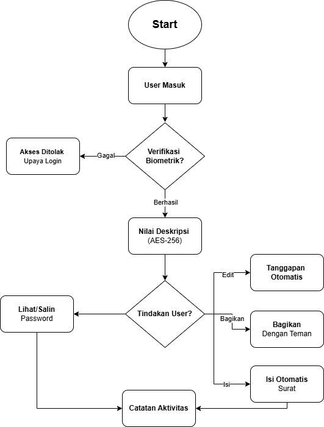
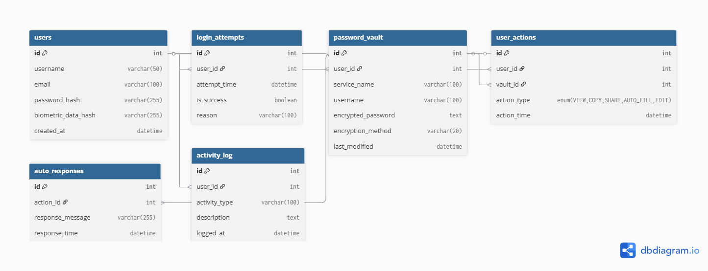

Penjelasan Aplikasi
CypherVault adalah aplikasi manajemen password tingkat enterprise yang dirancang khusus untuk organisasi yang membutuhkan keamanan maksimal dalam mengelola kredensial digital mereka. Dengan menggunakan enkripsi end-to-end dan teknologi zero-knowledge architecture, CipherVault memastikan bahwa hanya pengguna yang memiliki akses ke password mereka.
Aplikasi ini mengintegrasikan autentikasi biometrik multi-layer, termasuk fingerprint, face recognition, dan voice authentication untuk memastikan bahwa hanya pengguna yang berwenang dapat mengakses vault mereka. CypherVault juga mendukung sharing password yang aman antar tim dengan kontrol akses granular.
Dengan fitur auto-fill yang cerdas, password generator yang kuat, dan audit trail yang lengkap, CypherVault membantu organisasi menerapkan best practice keamanan password tanpa mengorbankan produktivitas. Sistem backup terenkripsi memastikan data tidak akan pernah hilang meskipun terjadi bencana.
Keunggulan Aplikasi
- 🔒 Enkripsi End-to-End AES-256 Menggunakan standar enkripsi militer AES-256 dengan zero-knowledge architecture, di mana bahkan administrator CypherVault tidak dapat mengakses password pengguna. Setiap data dienkripsi di sisi klien sebelum dikirim ke server, memastikan privacy maksimal.
- 👤 Autentikasi Biometrik Multi-Layer Sistem keamanan berlapis yang menggabungkan fingerprint, facial recognition, dan voice authentication. Mendukung passkey dan hardware security keys (YubiKey, Titan) untuk autentikasi yang tidak dapat di-phishing. MFA dapat dikustomisasi sesuai kebijakan keamanan organisasi.
- ⚡ Smart Auto-Fill & Password Generator Auto-fill yang cerdas bekerja di semua browser dan aplikasi mobile, mengenali form login secara otomatis. Password generator menghasilkan password yang kuat dan unik dengan customizable policy (panjang, karakter khusus, dll). Fitur password health check mengidentifikasi password yang lemah atau digunakan berulang.
Flowchart Aplikasi

Entity Relationship Diagram (ERD)
